目次
DriveVLA-W0: World Models Amplify Data Scaling Law in Autonomous Driving
Yingyan Li1*、Shuyao Shang1*、Weisong Liu1*、Bing Zhan1*、Haochen Wang1*、Yuqi Wang1、Yuntao Chen1、Xiaoman Wang2、Yasong An2、Chufeng Tang2、Lu Hou2、Lue Fan1✉、Zhaoxiang Zhang1✉
1中国科学院自動化研究所（CASIA）NLPR、2Yinwang Intelligent Technology Co. Ltd.
{liyingyan2021, shangshuyao2024, liuweisong2024, zhanbing2024}@ia.ac.cn、{lue.fan, zhaoxiang.zhang}@ia.ac.cn
コード：https://github.com/BraveGroup/DriveVLA-W0
arXiv:2510.12796v2 [cs.CV]、2025年12月18日（プレプリント）
翻訳について：原文 PDF は
60_DriveVLA_W0_2510.12796.pdf（全 22 ページ）。本文、図の説明、図中ラベル、表、脚注、付録を訳出し、論文タイトルと参考文献は原文のまま掲載。図は原図を掲載し、英語ラベルの日本語訳を併記した。数式・数値・引用番号・コードの識別子は原文を維持。原文の記述に関する補足は「訳注」と明示し、本文と区別している。
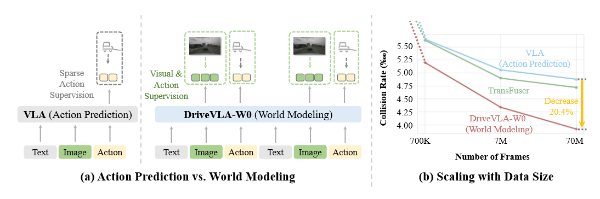
図1：VLA のデータスケーラビリティを促す触媒としての世界モデリング。(a)：行動の教師信号のみで訓練される標準的な VLA と異なり、我々の DriveVLA-W0 は将来の行動と視覚シーンの両方を予測するよう訓練される。(b)：この世界モデリングタスクは密な教師信号源となり、モデルが大規模データの恩恵をより良く活用することを可能にする。
図中ラベル：(a) Action Prediction vs. World Modeling＝行動予測 対 世界モデリング、Sparse Action Supervision＝疎な行動教師信号、Visual & Action Supervision＝視覚と行動の教師信号、VLA (Action Prediction)＝VLA（行動予測）、DriveVLA-W0 (World Modeling)＝DriveVLA-W0（世界モデリング）、Text＝テキスト、Image＝画像、Action＝行動。(b) Scaling with Data Size＝データサイズに対するスケーリング、Collision Rate (‰)＝衝突率（‰）、Number of Frames＝フレーム数、Decrease 20.4%＝20.4% 減少
要旨
Vision-Language-Action（VLA）モデルを大規模データでスケールさせることは、より汎化した運転知能を実現する有望な道筋である。しかし VLA モデルは「教師信号不足（supervision deficit）」によって制約されている。すなわち、膨大なモデル容量が疎で低次元な行動によってのみ教師付けされるため、その表現力の多くが十分に活用されないままとなっている。これを改善するため、我々は世界モデリングによって将来画像を予測する訓練パラダイム DriveVLA-W0 を提案する。このタスクは密な自己教師あり信号を生成し、モデルに運転環境の根底にあるダイナミクスの学習を強いる。我々はこのパラダイムを支配的な 2 つの VLA の典型、すなわち離散的な視覚トークンを用いる VLA 向けの自己回帰型世界モデルと、連続的な視覚特徴量上で動作する VLA 向けの拡散世界モデルとして具体化し、その汎用性を示す。世界モデリングから学習された豊かな表現を基盤として、リアルタイム展開のための推論レイテンシに対処する軽量な行動エキスパート（action expert）を導入する。NAVSIM v1/v2 ベンチマークおよび 680 倍大きい社内データセットでの広範な実験により、DriveVLA-W0 が BEV および VLA のベースラインを大幅に上回ることを示す。決定的に重要なのは、本手法がデータのスケーリング則を増幅し、訓練データセットのサイズが大きくなるほど性能向上が加速することを示した点である。
1 はじめに
スケーリング則の約束（Kaplan et al., 2020; Zhai et al., 2022; Baniodeh et al., 2025; Dehghani et al., 2023）は、ペタバイト規模の運転データを活用して強力な基盤モデルを訓練できるという期待とともに、より汎化した運転知能への魅力的な道筋を示している。現状では、2 つの支配的なパラダイムが存在する。一方は、鳥瞰図（Bird's-Eye-View, BEV）表現（Li et al., 2022; Huang et al., 2021）を中心とする特化型モデル（Hu et al., 2022; Jiang et al., 2023）である。これらのモデルは注意深く設計された幾何学的事前知識の上に構築されており、運転特有のタスクには有効である一方、運転以外のデータセットを活用することを容易でなくしている。加えて、比較的コンパクトなアーキテクチャであるため、大規模データに対するスケーラビリティの潜在力が制約される可能性がある。これに対し、Vision-Language-Action（VLA）モデル（Fu et al., 2025; Li et al., 2025b; Zhou et al., 2025c）が有望な代替として登場した。インターネット規模のデータで事前学習された大規模 Vision-Language Model（VLM）（Wang et al., 2024b; Bai et al., 2025）を活用することで、VLA ははるかに大きなモデルサイズと、より大きな本質的スケーリング潜在力を持つ。
しかし、このスケーリングの潜在力は、ある重大な課題のためにほとんど実現されていない。VLA モデルの巨大なモデルサイズに対して、教師信号が極めて疎なのである。標準的なパラダイムでは、これらの VLM モデルをエキスパートの行動のみでファインチューニングする。これはモデルに、高次元の感覚入力を少数の低次元制御信号（例：ウェイポイント）へ写像するタスクを課すことになる。これが深刻な「教師信号不足」を生む。この不足はモデルが豊かな世界表現を学習することを妨げ、行動のみの訓練データの量を単に増やすだけでは克服できない根本的な限界となる。実際、我々は十分な教師信号がない場合、大規模な VLA モデルがより小さな特化型 BEV モデルに劣ることさえあることを観察している。
この教師信号不足に対処するため、我々は世界モデリング（Li et al., 2024a; Wang et al., 2025; Cen et al., 2025; Chen et al., 2024）の力を活用し、疎な行動信号を補う密な自己教師あり目的としてそれを統合する。モデルに将来画像の予測を課すことで、各時刻において密で豊かな教師信号を生成する。この目的はモデルに環境の根底にあるダイナミクスを学習させ、豊かで予測的な世界表現を構築させる。本アプローチの有効性を検証するため、我々はこれを支配的な 2 つの VLA アーキテクチャ系統に実装する。両者は主に視覚表現、すなわち離散トークンか連続特徴量かによって区別される。画像を離散的な視覚トークンとして表現する VLA にとって、世界モデリングは自然な拡張である。我々は将来画像の離散視覚トークン列を予測する自己回帰型世界モデルを提案する。連続特徴量上で動作する VLA にとっては、視覚語彙を持たないため次トークン予測を直接適用できず、このタスクはより困難である。このギャップを埋めるため、現在フレームで生成された視覚特徴量と行動特徴量を条件として将来画像のピクセルを生成する拡散世界モデルを導入する。
我々は、学術ベンチマークから大規模な社内データセットに至る複数のデータ規模で、世界モデリングのアプローチを検証する。まず、学術ベンチマーク上でのスケーリング実験により、世界モデリングが汎化に不可欠であることが明らかになる。これは、データセット固有の行動パターンに過学習するのではなく、頑健な視覚パターンを学習するためである。真のスケーリング則を調べるため、次に図1に示すように 7000 万（70M）フレームの大規模な社内データセットを活用する。これにより、我々の中心仮説、すなわち世界モデリングがデータのスケーリング則を増幅することが確認される。この利点は将来フレーム予測がもたらす密な視覚的教師信号に由来し、行動のみのデータ量を純粋にスケールさせるだけでは埋められない質的な差を生み出す。最後に、リアルタイム展開を可能にするため、軽量な MoE ベースの行動エキスパート（Action Expert）を導入する。このエキスパートは行動生成を大規模な VLA バックボーンから切り離し、推論レイテンシをベースライン VLA のわずか 63.1% に削減するとともに、大規模なスケールで異なる行動デコーダを研究するための効率的なテストベッドを提供する。これにより、小規模から大規模なデータスケールにかけて性能傾向が逆転するという興味深い現象が明らかになる。複雑なフローマッチング・デコーダは小規模データセットでしばしば優位に立つが、大規模なスケールではこの関係が逆転し、より単純な自己回帰デコーダが最良の性能を示すことを見出した。本研究の主な貢献は次の 3 点である。
- 「教師信号不足」を VLA のスケーリングにおける重大なボトルネックとして特定し、世界モデリングを用いて視覚予測から密な自己教師あり学習信号を提供するパラダイム DriveVLA-W0 を提案する。
- 実験により、世界モデリングの 2 つの重要なスケーリング上の利点を明らかにする。第一に、転移可能な視覚表現を学習することで、行動分布の異なるドメイン間での汎化を高める。第二に、7000 万フレームの大規模データセットにおいてデータのスケーリング則を増幅し、行動のみの教師信号を単にスケールアップするだけでは得られない利益をもたらす。
- 推論レイテンシをベースラインの 63.1% に削減する軽量な MoE ベースの行動エキスパートを導入する。このエキスパートをテストベッドとして用い、行動デコーダに関する興味深いスケーリング則の逆転を発見する。すなわち、大規模なスケールではより単純な自己回帰モデルがより複雑なフローマッチングモデルを上回り、小規模データセットで見られる性能傾向が逆転する。
2 関連研究
自動運転における VLA。自動運転における VLM の発展は、解釈への注力から統合されたエンドツーエンド VLA アーキテクチャへと進化する 3 つの主要段階を経てきた。第一段階である言語ベースのシーン解釈モデルは、解釈可能性の向上に注力した。DriveGPT4（Xu et al., 2024）のようなモデルは、大規模言語モデル（LLM）を用いてシーンの説明や高レベルの運転操作の提案を生成したが、直接実行可能な行動は生成しなかった（Chen et al., 2025; Zhou et al., 2025b）。第二段階であるモジュール型の言語→行動フレームワークは、高レベルの指令と低レベルの制御を接続することを目指した。これらの手法（Zhou et al., 2025a; Yuan et al., 2024; Zhang et al., 2025; Arai et al., 2025; Gao et al., 2025）は、離散的なテキスト指令のような微分不可能なインタフェースでモジュールが接続された多段パイプラインを用いており、勾配の逆伝播が妨げられる。現在の最前線はエンドツーエンド VLA（Renz et al., 2025; 2024; Jiang et al., 2025; Hwang et al., 2024; Yang et al., 2025; Zeng et al., 2025）であり、統一されたアーキテクチャによってセンサ入力を直接軌跡へ写像する。このパラダイムの中で、DriveMoE（Yang et al., 2025）は Mixture-of-Experts（MoE）アーキテクチャを導入し、VLM バックボーンの後段に行動デコーダを直列に接続した。ReCogDrive（Li et al., 2025b）は、模倣学習と強化学習で訓練された拡散プランナと VLM を統合し、言語と行動の間のギャップを埋める。AutoVLA（Zhou et al., 2025c）は軌跡を行動プリミティブへトークン化し、単一の自己回帰モデルで適応的な推論と計画を学習できるようにする。我々はこのパラダイムに従い、エンドツーエンド VLA を提案する。
運転とロボティクスにおける世界モデル 世界モデルの研究は通常、2 つの異なる考え方に従う。シミュレーションのためのデータ合成器として利用するか、表現学習のための補助目的として用いるかである。第一の流れは生成に注力し、高品質な運転データの合成を目指す。GAIA-1（Hu et al., 2023）、DrivingGPT（Chen et al., 2024）、Doe-1（Zheng et al., 2024a）などの代表的な研究は、将来画像やマルチモーダルトークンを生成して現実的なシナリオを作り出し、Copilot4D（Zhang et al., 2023）は特に将来の離散視覚トークンを予測する。一方、第二の流れは世界モデリングを自己教師あり目的として活用し、表現学習を強化する。VaVAM（Bartoccioni et al., 2025）は生成的な動画事前学習の価値を示しているが、行動による条件付けを欠いている。これに対し、UniVLA（Wang et al., 2025）と WorldVLA（Cen et al., 2025）は行動を自己回帰予測に組み込み、頑健な方策を学習する。自動運転では、LAW（Li et al., 2024a）が潜在世界モデルを用いてこのパラダイムを開拓した。LAW の潜在予測とは異なり、我々の研究はモデルに将来画像を予測させるよう教師付けし、VLA バックボーンに対してより豊かで直接的な密な学習信号を提供する。
3 手法
我々の手法は 3 つの主要なステップで展開される。まず、行動のみの疎な教師信号の課題を示すために VLA ベースラインを確立する。次に、我々の主要な貢献である世界モデリングによってこのベースラインを強化し、密な自己教師信号を提供する。これを基盤として、軽量な MoE ベースの行動エキスパート（Action Expert）を導入することで推論のボトルネックに取り組み、強力なモデルがリアルタイム性能を達成することを保証する。
3.1 VLA ベースライン
我々の Vision-Language-Action（VLA）ベースラインは、言語指示（\(L_t\)）、前方視点画像（\(V_t\)）、過去の行動（\(A_{t-1}\)）の系列を処理する。幅広い適用可能性を確保するため、支配的な 2 つの VLM パラダイム上に変種を構築する。Emu3 型のバックボーン向けに画像を離散視覚トークンへ量子化する VLA (VQ) と、Qwen2.5-VL 型のバックボーン向けに連続特徴量を抽出する VLA (ViT) である。
入力のトークン化。高レベルの運転言語指示（\(L_t\)）は VLM 固有のトークナイザで処理する。過去の行動については、FAST トークナイザ（Pertsch et al., 2025）を用いて連続的なウェイポイント軌跡を離散トークン列に変換し、これを \(A_{t-1}\) と表す。
VLM バックボーン。各時刻 \(t\) において、Wang et al. (2025); Fan et al. (2025) に従い、\(H\) ステップの履歴にわたるマルチモーダルなチャンクを連結することで、深くインターリーブされた入力系列 \(S_t\) を構成する：\(S_t = [L_{t-H}, V_{t-H}, A_{t-H-1}, \ldots, L_t, V_t, A_{t-1}]\)。この系列は VLM バックボーンによって自己回帰的に処理される。バックボーンとしては 2 つの代表的なモデルを選択する。離散視覚表現を扱う Emu3 (8B)（Wang et al., 2024b）と、連続特徴量を扱う Qwen2.5-VL (7B)（Bai et al., 2025）であり、いずれも因果的注意マスクを用いる。VLM バックボーンは最終層の隠れ状態を出力し、それらはそれぞれのモダリティに従って言語（\(F_t^L\)）、視覚（\(F_t^V\)）、行動（\(F_t^A\)）の特徴量に分割される。
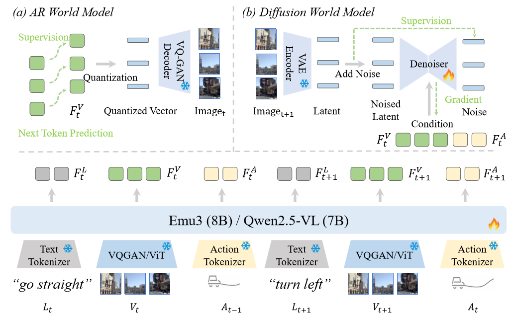
図2：DriveVLA-W0 のアーキテクチャ。世界モデリングを 2 つの方法で実現する。(a) 離散視覚トークンを予測する AR 世界モデル、(b) マルチモーダル入力を条件として潜在表現をデノイズする拡散世界モデル。
図中ラベル：(a) AR World Model＝AR（自己回帰）世界モデル、Supervision＝教師信号、Next Token Prediction＝次トークン予測、Quantization＝量子化、Quantized Vector＝量子化ベクトル、VQ-GAN Decoder＝VQ-GAN デコーダ、Imaget＝画像t。(b) Diffusion World Model＝拡散世界モデル、VAE Encoder＝VAE エンコーダ、Imaget+1＝画像t+1、Latent＝潜在、Add Noise＝ノイズ付加、Noised Latent＝ノイズ付き潜在、Denoiser＝デノイザ、Condition＝条件、Gradient＝勾配、Noise＝ノイズ。下段：Text Tokenizer＝テキストトークナイザ、Action Tokenizer＝行動トークナイザ、"go straight"＝「直進」、"turn left"＝「左折」。雪の結晶は凍結、炎は学習対象を示す
行動予測。訓練では、標準的な交差エントロピー損失を用いて、正解の行動トークン列 \(A_t = (a_1, \ldots, a_M)\) を予測するようモデルを最適化する：
\[ \mathcal{L}_{\text{Action}} = -\sum_{i=1}^{L} \log P(a_i \mid S_t, a_{\lt i}). \tag{1} \]
（訳注：行動トークン列の長さは \(M\) と定義されているが、式(1) の総和の上限は \(L\) となっている。原文のまま掲載する。）
推論時には、訓練済みモデルがコンテキスト \(S_t\) を条件として行動トークン列を自己回帰的に生成する。これらのトークンはその後、FAST デトークナイザ（Pertsch et al., 2025）によって連続的なウェイポイント軌跡に戻される。
3.2 世界モデリング
従来の VLA パイプラインは通常、モデルの行動のみを教師付けする。これは疎な教師信号をもたらし、高次元の感覚入力を少数の低次元制御信号へ圧縮することになり、「教師信号不足」を招く。これに対処するため、我々は強力な自己教師あり目的として世界モデリングを導入する。世界モデルは 2 つの VLA パラダイムに対して異なる形で実装する。離散的な視覚語彙を備えた VLA に対しては、世界モデルを次トークン予測タスクとして定式化し、AR 世界モデルを構成する。一方、連続的な視覚特徴量上で動作する VLA に対しては、連続潜在空間で将来画像を生成する拡散世界モデルを導入する。
AR 世界モデル。我々の AR 世界モデルは、過去の観測と行動を条件として、現在の視覚シーンの離散視覚トークン列を自己回帰的に生成することでそれを予測する（図2 (a)）。
訓練。モデルは、先行するコンテキスト \(S_{\lt V_t}\) を条件として、現在画像の視覚トークン列 \(V_t = (v_1, \ldots, v_N)\) を自己回帰的に生成するよう学習する。この過程は次トークン予測損失を最小化することで最適化される：
\[ \mathcal{L}_{\text{WM-AR}} = -\sum_{i=1}^{N} \log P(v_i \mid S_{\lt V_t}, v_{\lt i}). \tag{2} \]
この完全なフレームワークを DriveVLA-W0 (VQ) と呼ぶ。これは行動損失と AR 世界モデル損失の重み付き和 \(\mathcal{L}_{\text{Total}} = \mathcal{L}_{\text{Action}} + \alpha \mathcal{L}_{\text{WM-AR}}\) を最適化することで同時に訓練される。ここで \(\alpha\) はバランス係数である。
推論。低レイテンシを確保するため、推論時には視覚トークンの明示的な生成は通常省略されるが、この能力は可視化の目的では依然として有用である。画像を生成するには、モデルが視覚トークン列を自己回帰的にサンプリングし、それを MoVQGAN（Zheng et al., 2022）デコーダに渡して最終画像 \(\hat{I}_t\) を描画する。
拡散世界モデル。VQ ベースの対応物と異なり、我々の VLA (ViT) モデルは次トークン予測に適した離散視覚語彙を持たない。そこで我々は拡散世界モデルを導入する。これは代わりに、図2 に示すように、VLA の豊かな出力特徴量（\(F_t^V, F_t^A\)）を条件として将来画像を生成する潜在拡散モデル（Rombach et al., 2021; Wang et al., 2024a）を訓練することで密な教師信号を提供する。将来フレーム（\(\mathbf{I}_{t+1}\)）を予測するというこの選択は決定的に重要である。モデルは現在のすべての特徴量を同時に条件として与えられるため、単なる再構成タスクを行うのではなく予測的なダイナミクスを学習するには、未来を予測することが必要となる。
訓練。このフレームワークは、VLA の現在の視覚特徴量と行動特徴量（\(F_t^V\) と \(F_t^A\)）を条件として、将来の視覚シーン（\(\mathbf{I}_{t+1}\)）を予測するよう学習する。標準的な潜在拡散の設定に従い、モデルは将来画像の潜在表現にノイズを加えたものをデノイズするよう訓練される。これは MSE 目的によって最適化される：
\[ \mathcal{L}_{\text{WM-Diff}} = \mathbb{E}_{z_{t+1}, \epsilon, k} \left[ \lVert \epsilon - \hat{\epsilon}(z_{t+1,k}, k, F_t^V, F_t^A) \rVert^2 \right]. \tag{3} \]
ここで \(z_{t+1}\) は将来画像 \(\mathbf{I}_{t+1}\) の潜在、\(\epsilon \sim \mathcal{N}(0, \mathbf{I})\) はサンプリングされたガウスノイズ、\(k\) はランダムな拡散タイムステップ、\(\hat{\epsilon}\) はノイズ付き潜在 \(z_{t+1,k}\) からノイズを予測するよう訓練されたデノイザネットワークである。この全体のフレームワークを DriveVLA-W0 (ViT) と呼ぶ。これは行動予測損失と拡散世界モデル損失を組み合わせた結合目的 \(\mathcal{L}_{\text{Total}} = \mathcal{L}_{\text{Action}} + \beta \mathcal{L}_{\text{WM-Diff}}\) を最適化することでエンドツーエンドに訓練される。ここで \(\beta\) はバランス係数である。
推論。AR モデルと同様に、リアルタイム性能を確保するため、運転時の推論では拡散過程を省略する。定性分析のためには、ランダムノイズから出発し特徴量 \(F_t^V\) と \(F_t^A\) を条件として逆拡散過程を実行することで将来フレームを生成し、予測画像 \(\hat{I}_{t+1}\) を得ることができる。
3.3 行動エキスパート
MoE アーキテクチャ。（Black et al.; Intelligence et al., 2025）我々の大規模 VLA バックボーンは表現学習に優れるが、そのサイズはリアルタイム制御には過大である。これに対処するため、Mixture-of-Experts（MoE）アーキテクチャにおいて、主たる VLA エキスパート（我々の完全な VLA バックボーン）と並行して動作する軽量な行動エキスパート（500M）を導入する。行動エキスパートは VLA エキスパートと類似した Transformer ブロック構造を共有するが、隠れ次元ははるかに小さい。このアーキテクチャ上の類似性により、図3(a) に示すように、結合注意（Joint Attention）機構を介した深く効率的な情報融合が可能になる。この設定では、両エキスパートがまずそれぞれの Query、Key、Value 行列を計算する。次にこれらの行列をトークン系列の次元に沿って連結し、結合注意演算への単一の入力集合を作る：
\[ Q = [Q_{\text{VLA}}; Q_{\text{AE}}], \quad K = [K_{\text{VLA}}; K_{\text{AE}}], \quad V = [V_{\text{VLA}}; V_{\text{AE}}]. \tag{4} \]
得られた注意の出力は、図3 に示すように分割されて対応する各エキスパートへ戻される。この方式により、VLA の豊かな表現と行動エキスパートの専門的なコンテキストを、単一の効率的な計算の中で緊密かつ対称的に統合できる。
この効率的な MoE アーキテクチャは、3 つの異なる行動デコーディング戦略、すなわちクエリベース、自己回帰、フローマッチングのエキスパートを体系的に調べるための理想的なテストベッドとしても機能する。これらの変種に共通する重要な点は、前の行動の特徴量（\(A_{t-1}\)）をプリフィルすることであり、これが現在の意思決定に対する強い時間的事前情報となる。
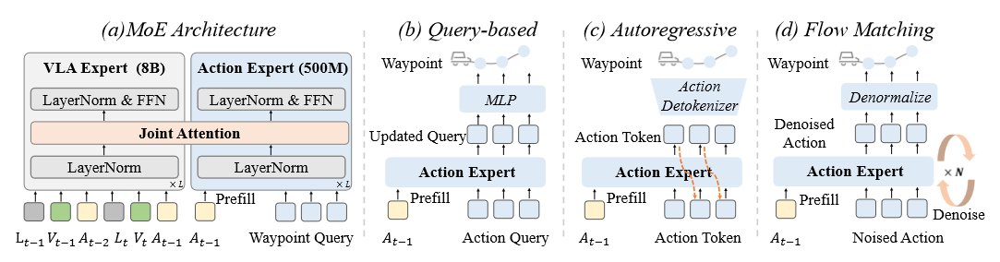
図3：(a) 我々の Mixture-of-Experts（MoE）アーキテクチャは、効率的な推論のために大規模な VLA エキスパートと軽量な行動エキスパートを組み合わせる。(b-d) このフレームワークは、3 つの行動デコーディング方式、すなわちクエリベース、自己回帰、フローマッチングを比較するテストベッドとして機能する。
図中ラベル：(a) MoE Architecture＝MoE アーキテクチャ、VLA Expert (8B)＝VLA エキスパート（8B）、Action Expert (500M)＝行動エキスパート（500M）、Joint Attention＝結合注意、Prefill＝プリフィル、Waypoint Query＝ウェイポイントクエリ。(b) Query-based＝クエリベース、Waypoint＝ウェイポイント、Updated Query＝更新後クエリ、Action Query＝行動クエリ。(c) Autoregressive＝自己回帰、Action Detokenizer＝行動デトークナイザ、Action Token＝行動トークン。(d) Flow Matching＝フローマッチング、Denormalize＝非正規化、Denoised Action＝デノイズ後の行動、Denoise＝デノイズ、Noised Action＝ノイズ付き行動
クエリベースの行動エキスパート。このエキスパートは、結合注意を介して VLA のマルチモーダルなコンテキストと相互作用する学習可能な行動クエリの集合を用いる。得られた更新後のクエリは MLP ヘッドによって射影され、連続的なウェイポイント軌跡を直接回帰する。モデルは予測軌跡と正解軌跡の L1 距離を最小化することで最適化される。
自己回帰型行動エキスパート。このエキスパートは、離散トークン列を自己回帰的に予測することで行動を生成する。その訓練目的と定式化は VLA ベースライン（3.1 節で記述）で用いたものと同一であり、標準的な交差エントロピー損失を最小化する。
フローマッチング行動エキスパート。自己回帰アプローチの離散的な性質とは対照的に、我々はフローマッチングに基づく連続的な行動生成手法も実装する。この手法は、単純なノイズ分布から実世界の運転行動の複雑な分布への直接的な「経路」を定める条件付きベクトル場 \(v_\phi\) を学習する。訓練中は、ランダムなノイズサンプルと正解行動の間に単純な直線軌跡を定義する（Liu et al., 2022）。次に、マルチモーダルなコンテキスト \(\mathbf{c}_t\) を条件として、各点においてこの軌跡に沿うベクトル場 \(v_\phi\) を予測するよう、平均二乗誤差損失によってモデルを最適化する。推論時には、新しいノイズサンプルから出発し、数値 ODE ソルバを用いて学習済みベクトル場に一定ステップ数だけ従うだけである。この過程はノイズを、学習されたデータ多様体上にある精密で連続的な行動へと決定論的に変換する。
4 実験
4.1 データセット
NAVSIM。安全性が重要なシナリオでの性能を評価するため、OpenScene（Contributors, 2023）から派生した NAVSIM（Dauner et al., 2024）ベンチマークを用いる。
NAVSIM v1 の評価指標には、自責衝突なし（No at-fault Collision, NC）、走行可能領域遵守（Drivable Area Compliance, DAC）、衝突余裕時間（Time-To-Collision, TTC）、快適性（Comfort, C.）、自車の進捗（Ego Progress, EP）が含まれる。NAVSIM はモデル性能の評価に Predictive Driver Model Score（PDMS）を用いる：\(PDMS = NC \times DAC \times \frac{5 \times EP + 5 \times TTC + 2 \times C.}{12}\)。
NAVSIM v2（Cao et al., 2025）は、ペナルティまたは重み付きサブスコアに分類されるいくつかの構成要素を含む。主要な指標は、自責衝突なし（NC）、走行可能領域遵守（DAC）、走行方向遵守（Driving Direction Compliance, DDC）、信号遵守（Traffic Light Compliance, TLC）、自車の進捗（EP）、衝突余裕時間（TTC）、車線維持（Lane Keeping, LK）、履歴快適性（History Comfort, HC）、拡張快適性（Extended Comfort, EC）である。NAVSIM v2 はモデル性能の評価に Extended Predictive Driver Model Score（EPDMS）を用いる：\(\text{EPDMS} = \text{NC} \times \text{DAC} \times \text{DDC} \times \text{TLC} \times \frac{5 \times \text{EP} + 5 \times \text{TTC} + 2 \times \text{LK} + 2 \times \text{HC} + 2 \times \text{EC}}{16}\)。
社内データセット。学術ベンチマークを超えたデータスケーラビリティを検証するため、訓練と評価に大規模な社内データセットを用いる。訓練セットは 100 万を超えるユニークなクリップから得た 7000 万フレームを含む。このデータセットは幅広い運転シナリオにわたって多様かつバランスが取れるよう整備されており、同時に困難で安全上重要なイベントが大幅に多く含まれている。テストセットは 100 の困難なシナリオからなる。軌跡は 3 秒・6 ウェイポイント（2 Hz）の将来軌跡に対する平均変位誤差（Average Displacement Error, ADE）で、安全性は衝突率（Collision Rate）で評価する。衝突率は NAVSIM ベンチマークの自責衝突なし（NC）指標と同じ方法で計算する。
| 手法 | Ref | センサ | NC ↑ | DAC ↑ | TTC ↑ | C. ↑ | EP ↑ | PDMS ↑ |
|---|---|---|---|---|---|---|---|---|
| Human | - | - | 100 | 100 | 100 | 99.9 | 87.5 | 94.8 |
| BEV ベースの手法 | ||||||||
| UniAD (Hu et al., 2022) | CVPR'23 | 6x Cam | 97.8 | 91.9 | 92.9 | 100.0 | 78.8 | 83.4 |
| TransFuser (Prakash et al., 2021) | TPAMI'23 | 3x Cam + L | 97.7 | 92.8 | 92.8 | 100.0 | 79.2 | 84.0 |
| PARA-Drive (Weng et al., 2024) | CVPR'24 | 6x Cam | 97.9 | 92.4 | 93.0 | 99.8 | 79.3 | 84.0 |
| LAW (Li et al., 2024a) | ICLR'25 | 1x Cam | 96.4 | 95.4 | 88.7 | 99.9 | 81.7 | 84.6 |
| Hydra-MDP (Li et al., 2024b) | arXiv'24 | 3x Cam + L | 98.3 | 96.0 | 94.6 | 100.0 | 78.7 | 86.5 |
| DiffusionDrive (Liao et al., 2025) | CVPR'25 | 3x Cam + L | 98.2 | 96.2 | 94.7 | 100.0 | 82.2 | 88.1 |
| WoTE (Li et al., 2025a) | ICCV'25 | 3x Cam + L | 98.5 | 96.8 | 94.4 | 99.9 | 81.9 | 88.3 |
| VLA ベースの手法 | ||||||||
| DriveVLA-W0* | - | 1x Cam | 98.7 | 96.2 | 95.5 | 100.0 | 82.2 | 88.4 |
| AutoVLA (Zhou et al., 2025c) | NeurIPS'25 | 3x Cam | 98.4 | 95.6 | 98.0 | 99.9 | 81.9 | 89.1 |
| ReCogDrive (Li et al., 2025b) | arXiv'25 | 3x Cam | 98.2 | 97.8 | 95.2 | 99.8 | 83.5 | 89.6 |
| DriveVLA-W0† | - | 1x Cam | 98.7 | 99.1 | 95.3 | 99.3 | 83.3 | 90.2 |
| AutoVLA† (Zhou et al., 2025c) | NeurIPS'25 | 3x Cam | 99.1 | 97.1 | 97.1 | 100.0 | 87.6 | 92.1 |
| DriveVLA-W0‡ | - | 1x Cam | 99.3 | 97.4 | 97.0 | 99.9 | 88.3 | 93.0 |
表1：NAVSIM v1 における最先端手法との比較。NC：自責衝突なし。DAC：走行可能領域遵守。TTC：衝突余裕時間。C.：快適性。EP：自車の進捗。PDMS：predictive driver model score。略記：1x Cam（単一の前方カメラ）、Nx Cam（サラウンドビューカメラ）、L（LiDAR）。*：クエリベースの行動エキスパートを使用。†：Li et al. (2024b) に従い、複数の軌跡アンカーを伴うクエリベースの行動エキスパートを使用。‡：Zhou et al. (2025c) に従い、best-of-N（N=6）戦略を伴う AR 行動エキスパートを使用。
| 手法 | NC ↑ | DAC ↑ | DDC ↑ | TLC ↑ | EP ↑ | TTC ↑ | LK ↑ | HC ↑ | EC ↑ | EPDMS ↑ |
|---|---|---|---|---|---|---|---|---|---|---|
| Ego Status | 93.1 | 77.9 | 92.7 | 99.6 | 86.0 | 91.5 | 89.4 | 98.3 | 85.4 | 64.0 |
| TransFuser (Prakash et al., 2021) | 96.9 | 89.9 | 97.8 | 99.7 | 87.1 | 95.4 | 92.7 | 98.3 | 87.2 | 76.7 |
| HydraMDP++ (Li et al., 2024b) | 97.2 | 97.5 | 99.4 | 99.6 | 83.1 | 96.5 | 94.4 | 98.2 | 70.9 | 81.4 |
| DriveSuprem (Yao et al., 2025) | 97.5 | 96.5 | 99.4 | 99.6 | 88.4 | 96.6 | 95.5 | 98.3 | 77.0 | 83.1 |
| ARTEMIS (Feng et al., 2025) | 98.3 | 95.1 | 98.6 | 99.8 | 81.5 | 97.4 | 96.5 | 98.3 | - | 83.1 |
| DiffusionDrive (Liao et al., 2025) | 98.2 | 95.9 | 99.4 | 99.8 | 87.5 | 97.3 | 96.8 | 98.3 | 87.7 | 84.5 |
| DriveVLA-W0 | 98.5 | 99.1 | 98.0 | 99.7 | 86.4 | 98.1 | 93.2 | 97.9 | 58.9 | 86.1 |
表2：拡張指標を用いた NAVSIM v2 における最先端手法との比較。NC：自責衝突なし。DAC：走行可能領域遵守。DDC：走行方向遵守。TLC：信号遵守。EP：自車の進捗。TTC：衝突余裕時間。LK：車線維持。HC：履歴快適性。EC：拡張快適性。EPDMS：Extended Predictive Driver Model Score。
4.2 実装の詳細
2 段階の訓練パラダイム。我々のモデルは、まず豊かな世界表現を学習し、その後行動生成に特化するよう設計された 2 段階のパラダイムで訓練される。第 1 段階では、6VA 系列構成を用いて VLA バックボーンを事前学習する。モデルは世界モデル損失と行動予測損失の両方を組み合わせた結合目的で最適化される。第 2 段階では、モデルを行動エキスパートと統合する。このとき VLA バックボーンは 2VA の入力系列を処理する。VLA バックボーンは凍結しないが、モデルは行動エキスパート部分からの行動損失のみによって教師付けされる。
NAVSIM。NAVSIM ベンチマークでの実験では、モデルを NuPlan（Caesar et al., 2021）で 8k ステップ事前学習した後、NAVSIM で 4k ステップファインチューニングし、256x144 の画像を処理する。訓練は 8 基の NVIDIA L20 GPU 上で、グローバルバッチサイズ 48 で行う。オプティマイザには AdamW を用い、コサイン学習率スケジュール、初期学習率 \(2e-4\)、bfloat16 混合精度を用いた。アブレーション研究では、アーキテクチャの単純さから DriveVLA-W0 (VQ) をデフォルトのモデルとして選択する。
社内データセット。社内データセットでの大規模実験では、同じデータを用いてモデルを 50k ステップ事前学習し、30k ステップファインチューニングする。この訓練には 64 基の GPU からなるクラスタを用い、グローバルバッチサイズは 256 とした。オプティマイザと学習率スケジュールは NAVSIM の設定と同一である。
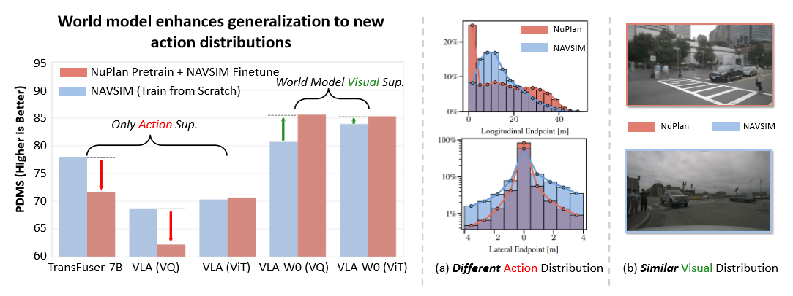
図4：世界モデリングはデータのスケーリングによる汎化を引き出す。我々の世界モデルは、疎な教師信号のベースラインにとっては不利益であった事前学習（赤矢印）を、我々の VLA-W0 にとっての利益（緑矢印）へと転じ、視覚は類似している (b) が行動分布が異なる (a) データセット間での正の知識転移を可能にする。図 (a) は Dauner et al. (2024) からの引用である。
図中ラベル：World model enhances generalization to new action distributions＝世界モデルは新しい行動分布への汎化を高める、NuPlan Pretrain + NAVSIM Finetune＝NuPlan で事前学習＋NAVSIM でファインチューニング、NAVSIM (Train from Scratch)＝NAVSIM（スクラッチから訓練）、Only Action Sup.＝行動のみの教師信号、World Model Visual Sup.＝世界モデルによる視覚の教師信号、PDMS (Higher is Better)＝PDMS（高いほど良い）、Longitudinal Endpoint [m]＝縦方向の終点 [m]、Lateral Endpoint [m]＝横方向の終点 [m]、(a) Different Action Distribution＝(a) 異なる行動分布、(b) Similar Visual Distribution＝(b) 類似した視覚分布
再実装した TransFuser。社内データセットに対する確かなベースラインを提供するため、よく知られた TransFuser（Prakash et al., 2021）アーキテクチャを適応・再実装する。単一カメラ構成との公平な比較のため、Latent-TransFuser（TransFuser の画像のみの変種）を、元のマルチビュー入力ではなく単一の前方視点画像を処理するよう変更する。モデルサイズの影響を調べるため、5000 万パラメータのモデルと 70 億パラメータのモデルの 2 つのバージョンを実装する。小さい方の TransFuser-50M は標準的な ResNet-34 バックボーンを用いる。大きい方の TransFuser-7B は、DINOv3（Siméoni et al., 2025）の事前学習済み重みで初期化した ViT-7B バックボーンを用いる。
4.3 最先端手法との比較
表1 と表2 に示すように、DriveVLA-W0 は、BEV ベースの WoTE（Li et al., 2025a）や VLA ベースの AutoVLA（Zhou et al., 2025c）を含む、異なるアーキテクチャパラダイムにわたる最高性能の手法を上回り、NAVSIM ベンチマークにおいて新たな最先端を確立する。特筆すべきは、我々のモデルが単一の前方カメラのみを用いてこの最高性能を達成し、マルチビューカメラと LiDAR を組み合わせたより豊富なセンサ構成に依存する競合手法を上回っている点である。この優れた性能は、世界モデリング目的による強力で密な教師信号に起因し、それによってモデルはより効果的な特徴表現を学習できる。
4.4 世界モデルはデータのスケーリング則を増幅する
世界モデリングはデータのスケーリングによる汎化を引き出す。行動分布が異なる状況での汎化を検証するため、大規模な NuPlan データセットで事前学習し、その後、困難なロングテールの運転操作に焦点を当てたより小規模なベンチマークである NAVSIM でファインチューニングすることでモデルを評価する。この設定は、視覚ドメインは類似したまま行動空間に大きなドメインシフトを生じさせ、知識転移にとっての課題となる。図4 と表7 に示すように、世界モデリングは効果的な転移に不可欠である。我々は 2 つの相反する傾向を観察する。1) 疎な行動教師信号のみに依存するベースラインモデルは、事前学習によってしばしば悪影響を受ける。例えば、TransFuser-7B と我々の VLA (VQ) ベースラインは大きな性能低下を示す（赤矢印）。これは NuPlan の行動分布への過学習によるものであり、それが NAVSIM のコーナーケースへの適応を妨げる有害な事前情報を生む。2) 我々の VLA-W0 モデルは一貫して事前学習の恩恵を受ける。将来の視覚フレームを予測させることで、世界モデリングは環境の転移可能な視覚表現の学習を促す。これらの転移可能な視覚表現が優れた汎化をもたらす。
データのスケーリングにおいて世界モデリングは行動のみの教師信号を上回る。3 つのデータ規模（70k、700k、70M フレーム）でモデルを訓練することで、データスケーラビリティを調べる。世界モデリングのパラダイムの影響を明確にアブレーションするため、これらの実験は行動エキスパートを除いた基本の VLA モデル上で直接行う。表3 に示すように、世界モデルは大規模データの恩恵を引き出すために不可欠である。疎な行動教師信号に依存するベースラインモデルはすぐに性能の飽和を示すのに対し、我々の DriveVLA-W0 モデルは持続的な改善を示す。その影響は 70M フレームの規模で最も顕著である。ここでは世界モデリングを加えることで性能が大きく向上し、VQ モデルの ADE が 28.8%、ViT モデルの衝突率が 15.9% 改善する。これは、膨大な量の訓練データがあっても、行動のみの教師信号では我々の密な世界モデル目的がもたらす質的な利点を再現できないことを示している。
| モデル | 社内データセットの規模（フレーム数） | |||||
|---|---|---|---|---|---|---|
| 70k | 700k | 70M | ||||
| ADE (m) ↓ | 衝突率 (%) ↓ | ADE (m) ↓ | 衝突率 (%) ↓ | ADE (m) ↓ | 衝突率 (%) ↓ | |
| TransFuser-50M | 2.5893 | 0.0894 | 1.7464 | 0.0563 | 1.2627 | 0.0472 |
| TransFuser-7B | 2.5757 | 0.0839 | 2.1391 | 0.0710 | 1.2244 | 0.0539 |
| VLA (VQ) (Baseline) | 2.8520 | 0.0982 | 1.5424 | 0.0565 | 1.4829 | 0.0488 |
| + World Model (Ours) | 2.7482 ↑3.6% | 0.0956 ↑2.7% | 1.5985 ↓3.6% | 0.0520 ↑8.0% | 1.0563 ↑28.8% | 0.0392 ↑19.7% |
| VLA (ViT) (Baseline) | 3.1524 | 0.0950 | 1.4202 | 0.0462 | 1.1051 | 0.0359 |
| + World Model (Ours) | 2.5268 ↑19.9% | 0.0834 ↑12.2% | 1.3436 ↑5.4% | 0.0513 ↓11.0% | 1.0640 ↑3.7% | 0.0302 ↑15.9% |
表3：データのスケーリングにおいて世界モデリングは行動のみの教師信号を上回る。疎な教師信号の下で早期に頭打ちとなるベースラインモデルと異なり、我々の VLA-W0 モデルは一貫した改善を示す。
（訳注：原表では ↑ が緑字で改善、↓ が赤字で悪化を表す。World Model (Ours)＝世界モデル（本手法）、Baseline＝ベースライン。）
データのスケーリングに伴い行動エキスパートの性能は逆転する。NAVSIM（100k フレーム）と社内データセット（70M フレーム）における行動エキスパートの比較により、予測精度とモデリング能力のトレードオフに起因する顕著な性能逆転が明らかになる。表4 に示すように、小規模な NAVSIM データセットでは、クエリベースやフローマッチングのような連続デコーダが優れている。ここでは軌跡分布が単純である。より高い精度により、これらのエキスパートは量子化誤差に妨げられる離散的な自己回帰アプローチに対して優位に立つ。しかし、我々の大規模データセットでは、はるかに複雑な軌跡分布をモデル化することが支配的な課題となる。この大量データの領域では、自己回帰デコーダの強力なモデリング能力と、サンプル効率の良い教師強制（teacher-forcing）による訓練によって、最も効果的にスケールできる。逆に、クエリベースのエキスパートは表現上のボトルネックに直面し、フローマッチングのエキスパートはサンプル効率が低すぎて複雑なデータ多様体に収束できず、観察された性能逆転につながる。
| 行動エキスパート | NAVSIM（103k フレーム） | 社内データセット（70M フレーム） | ||||||
|---|---|---|---|---|---|---|---|---|
| NC ↑ | DAC ↑ | TTC ↑ | C. ↑ | EP ↑ | PDMS ↑ | ADE (m) ↓ | 衝突率 (%) ↓ | |
| Query-based | 98.7 | 96.2 | 95.5 | 100.0 | 82.2 | 88.4 | 1.1248 | 0.0453 |
| Flow Matching | 98.4 | 95.3 | 95.2 | 100.0 | 80.9 | 87.2 ↓1.4% | 1.0362 ↑7.9% | 0.0398 ↑12.1% |
| Autoregressive | 98.4 | 93.6 | 94.5 | 100.0 | 79.3 | 85.3 ↓3.6% | 1.0069 ↑10.5% | 0.0295 ↑34.9% |
表4：データのスケーリングに伴い行動エキスパートの性能は逆転する。各データセットにおいて、3 つのエキスパートはすべて同一の事前学習済み VLA モデルから初期化される。注目すべきことに、小規模データで最良の性能を示すクエリベースのエキスパートは、大規模では自己回帰エキスパートに上回られ、明確な性能逆転が浮き彫りになる。
（訳注：Query-based＝クエリベース、Flow Matching＝フローマッチング、Autoregressive＝自己回帰。本文では NAVSIM を 100k フレームとしているが、表見出しでは 103k フレームとなっている。）
4.5 アブレーション研究
以下の 2 つの世界モデルのアブレーションは、行動エキスパートなしで実施する。
視覚のみ 対 視覚・行動系列 表5 に示すように、インターリーブされた視覚・行動系列（6VA）による事前学習は、視覚損失のみ（6V）で事前学習したベースラインに対して大きな向上をもたらし、PDMS スコアを 84.1 から 85.6 に改善する。これは、視覚予測を対応する自車の行動に結び付ける（グラウンディングする）ことが不可欠であることを示している。この条件付けにより、モデルは汎用的あるいは曖昧な未来ではなく、ある行動がもたらす特定の視覚的結果を予測しなければならないため、環境の根底にある因果的ダイナミクスを学習するよう強いられる。
系列長に関するアブレーション 事前学習の系列長を、VA、2VA、6VA の 3 つの構成でアブレーションする。表6 は、時間的コンテキストに応じて性能がスケールする明確な傾向を示しており、最も長い系列（6VA）が最良の結果を達成する。これは、より長いコンテキストウィンドウが、計画のための時間的依存関係をモデルがより良く捉えられるようにするため、複雑で長期的な環境ダイナミクスの学習に不可欠であることを浮き彫りにしている。
| 事前学習 (NuPlan) | ファインチューニング (NAVSIM) | NC ↑ | DAC ↑ | PDMS ↑ |
|---|---|---|---|---|
| / | 2VA | 97.1 | 90.3 | 80.7 |
| 6V | 2VA | 97.9 | 92.8 | 84.1 |
| 6VA | 2VA | 98.3 | 93.8 | 85.6 |
表5：視覚のみ 対 視覚・行動系列の設計に関するアブレーション研究。
| 事前学習 (NuPlan) | ファインチューニング (NAVSIM) | NC ↑ | DAC ↑ | PDMS ↑ |
|---|---|---|---|---|
| VA | VA | 96.8 | 92.7 | 83.3 |
| 2VA | 2VA | 97.3 | 93.2 | 84.2 |
| 6VA | 2VA | 98.3 | 93.8 | 85.6 |
表6：系列長を変化させたアブレーション研究。
レイテンシに関するアブレーション H200 GPU 上で推論レイテンシを測定することにより、MoE アーキテクチャの効率性を検証する。ベースラインの DriveVLA-W0（レイテンシ 117.8ms、85.6 PDMS）と比較して、我々のクエリベースの MoE エキスパートを加えることで、レイテンシは 74.3ms（元のわずか 63.1%）へと大幅に短縮され、同時に性能は 88.4 PDMS に向上する。さらなる分析は付録 B.1 に示す。
4.6 可視化
優れた計画性能を達成するだけでなく、DriveVLA-W0 は行動条件付きの将来生成において強力な能力を示し、反応型シミュレータとしての潜在力を浮き彫りにしている。図5 に示すように、我々はモデルを反実仮想的な「減速」軌跡で明示的に条件付ける。結果として得られるフレームでは、正解と比べて周囲のシーンが車両の横を明らかに遅い速度で流れていく。制御信号と視覚ダイナミクスとのこの精密な整合は、モデルが物理的にグラウンディングされた理解を持つことを裏付ける。軌跡の可視化と事例比較（図7、8、9、10）、将来画像の生成（図13）、反実仮想推論（図14）を含むさらなる定性分析については、付録 C を参照されたい。
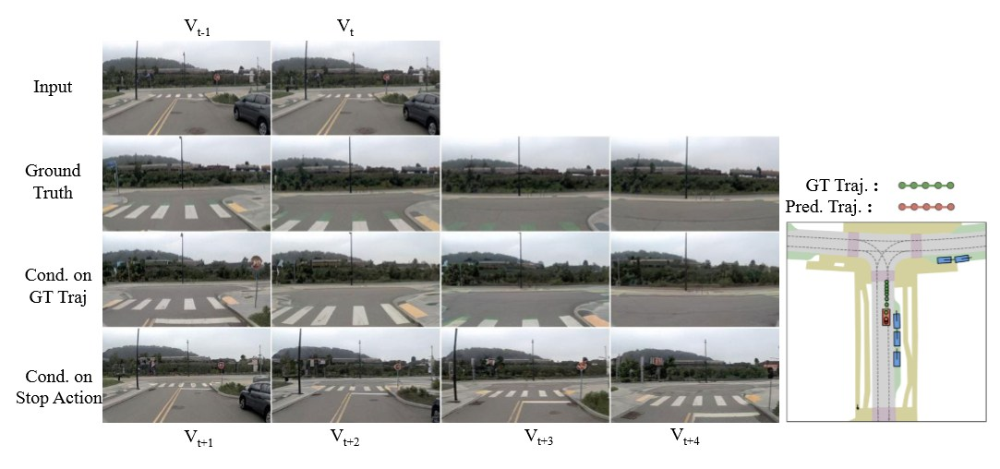
図5：行動条件付きシミュレーション。制御信号に基づいて多様な未来を生成できるシミュレータとしての、我々の世界モデルの有用性を示す。記録された正解では、自車は速度を維持して前進している。反実仮想的な「減速」行動でモデルを条件付けると、世界モデルは車両が減速するという異なる視覚的結果を生成する。
図中ラベル：Input＝入力、Ground Truth＝正解、Cond. on GT Traj＝正解軌跡で条件付け、Cond. on Stop Action＝停止行動で条件付け、GT Traj.＝正解軌跡、Pred. Traj.＝予測軌跡
5 結論
本研究では、「教師信号不足」を、自動運転における Vision-Language-Action モデルのスケーラビリティを妨げる根本的なボトルネックとして特定した。我々は、VQ ベースと ViT ベースの両アーキテクチャに合わせて、将来画像の予測を密な自己教師あり目的として用いることでこの問題を改善するパラダイム DriveVLA-W0 を提案した。広範な実験により、このアプローチがベースラインと比べて優れたデータスケーラビリティと汎化を引き出すだけでなく、大規模なスケールでは行動デコーダ間に興味深い性能逆転が生じ、より単純な自己回帰モデルが最終的に優位に立つことも明らかになった。結局のところ、我々の知見は、密で予測的な世界モデリングを取り入れることが、より汎化した運転知能の追求において大規模データの潜在力を完全に引き出すための重要な一歩であることを示唆している。
参考文献
参考文献は原文のまま掲載した。
- Hidehisa Arai, Keita Miwa, Kento Sasaki, Kohei Watanabe, Yu Yamaguchi, Shunsuke Aoki, and Issei Yamamoto. Covla: Comprehensive vision-language-action dataset for autonomous driving. In 2025 IEEE/CVF Winter Conference on Applications of Computer Vision (WACV), pp. 1933–1943. IEEE, 2025.
- Shuai Bai, Keqin Chen, Xuejing Liu, Jialin Wang, Wenbin Ge, Sibo Song, Kai Dang, Peng Wang, Shijie Wang, Jun Tang, Humen Zhong, Yuanzhi Zhu, Mingkun Yang, Zhaohai Li, Jianqiang Wan, Pengfei Wang, Wei Ding, Zheren Fu, Yiheng Xu, Jiabo Ye, Xi Zhang, Tianbao Xie, Zesen Cheng, Hang Zhang, Zhibo Yang, Haiyang Xu, and Junyang Lin. Qwen2.5-vl technical report. arXiv preprint arXiv:2502.13923, 2025.
- Mustafa Baniodeh, Kratarth Goel, Scott Ettinger, Carlos Fuertes, Ari Seff, Tim Shen, Cole Gulino, Chenjie Yang, Ghassen Jerfel, Dokook Choe, et al. Scaling laws of motion forecasting and planning–a technical report. arXiv preprint arXiv:2506.08228, 2025.
- Florent Bartoccioni, Elias Ramzi, Victor Besnier, Shashanka Venkataramanan, Tuan-Hung Vu, Yihong Xu, Loick Chambon, Spyros Gidaris, Serkan Odabas, David Hurych, et al. Vavim and vavam: Autonomous driving through video generative modeling. arXiv preprint arXiv:2502.15672, 2025.
- Kevin Black, Noah Brown, Danny Driess, Adnan Esmail, Michael Equi, Chelsea Finn, Niccolo Fusai, Lachy Groom, Karol Hausman, Brian Ichter, et al. \(\pi\)0: A vision-language-action flow model for general robot control. corr, abs/2410.24164, 2024. doi: 10.48550. arXiv preprint ARXIV.2410.24164.
- Holger Caesar, Juraj Kabzan, Kok Seang Tan, Whye Kit Fong, Eric Wolff, Alex Lang, Luke Fletcher, Oscar Beijbom, and Sammy Omari. nuplan: A closed-loop ml-based planning benchmark for autonomous vehicles. arXiv preprint arXiv:2106.11810, 2021.
- Wei Cao, Marcel Hallgarten, Tianyu Li, Daniel Dauner, Xunjiang Gu, Caojun Wang, Yakov Miron, Marco Aiello, Hongyang Li, Igor Gilitschenski, et al. Pseudo-simulation for autonomous driving. arXiv preprint arXiv:2506.04218, 2025.
- Jun Cen, Chaohui Yu, Hangjie Yuan, Yuming Jiang, Siteng Huang, Jiayan Guo, Xin Li, Yibing Song, Hao Luo, Fan Wang, et al. Worldvla: Towards autoregressive action world model. arXiv preprint arXiv:2506.21539, 2025.
- Lihong Chen, Hossein Hassani, and Soodeh Nikan. Ts-vlm: Text-guided softsort pooling for vision-language models in multi-view driving reasoning. arXiv preprint arXiv:2505.12670, 2025.
- Yuntao Chen, Yuqi Wang, and Zhaoxiang Zhang. Drivinggpt: Unifying driving world modeling and planning with multi-modal autoregressive transformers. arXiv preprint arXiv:2412.18607, 2024.
- OpenScene Contributors. Openscene: The largest up-to-date 3d occupancy prediction benchmark in autonomous driving, 2023.
- Daniel Dauner, Marcel Hallgarten, Tianyu Li, Xinshuo Weng, Zhiyu Huang, Zetong Yang, Hongyang Li, Igor Gilitschenski, Boris Ivanovic, Marco Pavone, et al. Navsim: Data-driven non-reactive autonomous vehicle simulation and benchmarking. arXiv preprint arXiv:2406.15349, 2024.
- Mostafa Dehghani, Josip Djolonga, Basil Mustafa, Piotr Padlewski, Jonathan Heek, Justin Gilmer, Andreas Peter Steiner, Mathilde Caron, Robert Geirhos, Ibrahim Alabdulmohsin, et al. Scaling vision transformers to 22 billion parameters. In International conference on machine learning, pp. 7480–7512. PMLR, 2023.
- Cunxin Fan, Xiaosong Jia, Yihang Sun, Yixiao Wang, Jianglan Wei, Ziyang Gong, Xiangyu Zhao, Masayoshi Tomizuka, Xue Yang, Junchi Yan, et al. Interleave-vla: Enhancing robot manipulation with interleaved image-text instructions. arXiv preprint arXiv:2505.02152, 2025.
- Renju Feng, Ning Xi, Duanfeng Chu, Rukang Wang, Zejian Deng, Anzheng Wang, Liping Lu, Jinxiang Wang, and Yanjun Huang. Artemis: Autoregressive end-to-end trajectory planning with mixture of experts for autonomous driving. arXiv preprint arXiv:2504.19580, 2025.
- Haoyu Fu, Diankun Zhang, Zongchuang Zhao, Jianfeng Cui, Dingkang Liang, Chong Zhang, Dingyuan Zhang, Hongwei Xie, Bing Wang, and Xiang Bai. Orion: A holistic end-to-end autonomous driving framework by vision-language instructed action generation. arXiv:2503.19755, 2025.
- Xiangbo Gao, Yuheng Wu, Rujia Wang, Chenxi Liu, Yang Zhou, and Zhengzhong Tu. Langcoop: Collaborative driving with language. In Proceedings of the Computer Vision and Pattern Recognition Conference, pp. 4226–4237, 2025.
- Jordan Hoffmann, Sebastian Borgeaud, Arthur Mensch, Elena Buchatskaya, Trevor Cai, Eliza Rutherford, Diego de Las Casas, Lisa Anne Hendricks, Johannes Welbl, Aidan Clark, et al. Training compute-optimal large language models. arXiv preprint arXiv:2203.15556, 2022.
- Anthony Hu, Lloyd Russell, Hudson Yeo, Zak Murez, George Fedoseev, Alex Kendall, Jamie Shotton, and Gianluca Corrado. Gaia-1: A generative world model for autonomous driving. arXiv preprint arXiv:2309.17080, 2023.
- Yihan Hu, Jiazhi Yang, Li Chen, Keyu Li, Chonghao Sima, Xizhou Zhu, Siqi Chai, Senyao Du, Tianwei Lin, Wenhai Wang, et al. Goal-oriented autonomous driving. arXiv preprint arXiv:2212.10156, 2022.
- Junjie Huang, Guan Huang, Zheng Zhu, and Dalong Du. Bevdet: High-performance multi-camera 3d object detection in bird-eye-view. arXiv preprint arXiv:2112.11790, 2021.
- Jyh-Jing Hwang, Runsheng Xu, Hubert Lin, Wei-Chih Hung, Jingwei Ji, Kristy Choi, Di Huang, Tong He, Paul Covington, Benjamin Sapp, et al. Emma: End-to-end multimodal model for autonomous driving. arXiv preprint arXiv:2410.23262, 2024.
- Physical Intelligence, Kevin Black, Noah Brown, James Darpinian, Karan Dhabalia, Danny Driess, Adnan Esmail, Michael Equi, Chelsea Finn, Niccolo Fusai, et al. \pi_0.5: a vision-language-action model with open-world generalization. arXiv preprint arXiv:2504.16054, 2025.
- Anqing Jiang, Yu Gao, Zhigang Sun, Yiru Wang, Jijun Wang, Jinghao Chai, Qian Cao, Yuweng Heng, Hao Jiang, Yunda Dong, et al. Diffvla: Vision-language guided diffusion planning for autonomous driving. arXiv preprint arXiv:2505.19381, 2025.
- Bo Jiang, Shaoyu Chen, Qing Xu, Bencheng Liao, Jiajie Chen, Helong Zhou, Qian Zhang, Wenyu Liu, Chang Huang, and Xinggang Wang. Vad: Vectorized scene representation for efficient autonomous driving. In ICCV, 2023.
- Jared Kaplan, Sam McCandlish, Tom Henighan, Tom B Brown, Benjamin Chess, Rewon Child, Scott Gray, Alec Radford, Jeffrey Wu, and Dario Amodei. Scaling laws for neural language models. arXiv preprint arXiv:2001.08361, 2020.
- Yingyan Li, Lue Fan, Jiawei He, Yuqi Wang, Yuntao Chen, Zhaoxiang Zhang, and Tieniu Tan. Enhancing end-to-end autonomous driving with latent world model. arXiv preprint arXiv:2406.08481, 2024a.
- Yingyan Li, Yuqi Wang, Yang Liu, Jiawei He, Lue Fan, and Zhaoxiang Zhang. End-to-end driving with online trajectory evaluation via bev world model. arXiv preprint arXiv:2504.01941, 2025a.
- Yongkang Li, Kaixin Xiong, Xiangyu Guo, Fang Li, Sixu Yan, Gangwei Xu, Lijun Zhou, Long Chen, Haiyang Sun, Bing Wang, et al. Recogdrive: A reinforced cognitive framework for end-to-end autonomous driving. arXiv preprint arXiv:2506.08052, 2025b.
- Zhenxin Li, Kailin Li, Shihao Wang, Shiyi Lan, Zhiding Yu, Yishen Ji, Zhiqi Li, Ziyue Zhu, Jan Kautz, Zuxuan Wu, et al. Hydra-mdp: End-to-end multimodal planning with multi-target hydra-distillation. arXiv preprint arXiv:2406.06978, 2024b.
- Zhiqi Li, Wenhai Wang, Hongyang Li, Enze Xie, Chonghao Sima, Tong Lu, Qiao Yu, and Jifeng Dai. Bevformer: Learning bird's-eye-view representation from multi-camera images via spatiotemporal transformers. arXiv preprint arXiv:2203.17270, 2022.
- Bencheng Liao, Shaoyu Chen, Haoran Yin, Bo Jiang, Cheng Wang, Sixu Yan, Xinbang Zhang, Xiangyu Li, Ying Zhang, Qian Zhang, et al. Diffusiondrive: Truncated diffusion model for end-to-end autonomous driving. In Proceedings of the Computer Vision and Pattern Recognition Conference, pp. 12037–12047, 2025.
- Fanqi Lin, Yingdong Hu, Pingyue Sheng, Chuan Wen, Jiacheng You, and Yang Gao. Data scaling laws in imitation learning for robotic manipulation. In The Thirteenth International Conference on Learning Representations, 2025.
- Xingchao Liu, Chengyue Gong, and Qiang Liu. Flow straight and fast: Learning to generate and transfer data with rectified flow. arXiv preprint arXiv:2209.03003, 2022.
- Alexander Naumann, Xunjiang Gu, Tolga Dimlioglu, Mariusz Bojarski, Alperen Degirmenci, Alexander Popov, Devansh Bisla, Marco Pavone, Urs Muller, and Boris Ivanovic. Data scaling laws for end-to-end autonomous driving. In Proceedings of the Computer Vision and Pattern Recognition Conference, pp. 2571–2582, 2025.
- Karl Pertsch, Kyle Stachowicz, Brian Ichter, Danny Driess, Suraj Nair, Quan Vuong, Oier Mees, Chelsea Finn, and Sergey Levine. Fast: Efficient action tokenization for vision-language-action models. arXiv preprint arXiv:2501.09747, 2025.
- Aditya Prakash, Kashyap Chitta, and Andreas Geiger. Multi-modal fusion transformer for end-to-end autonomous driving. In CVPR, 2021.
- Katrin Renz, Long Chen, Ana-Maria Marcu, Jan Hünermann, Benoit Hanotte, Alice Karnsund, Jamie Shotton, Elahe Arani, and Oleg Sinavski. Carllava: Vision language models for camera-only closed-loop driving. arXiv preprint arXiv:2406.10165, 2024.
- Katrin Renz, Long Chen, Elahe Arani, and Oleg Sinavski. Simlingo: Vision-only closed-loop autonomous driving with language-action alignment. In Proceedings of the Computer Vision and Pattern Recognition Conference, pp. 11993–12003, 2025.
- Robin Rombach, Andreas Blattmann, Dominik Lorenz, Patrick Esser, and Björn Ommer. High-resolution image synthesis with latent diffusion models, 2021.
- Oriane Siméoni, Huy V Vo, Maximilian Seitzer, Federico Baldassarre, Maxime Oquab, Cijo Jose, Vasil Khalidov, Marc Szafraniec, Seungeun Yi, Michaël Ramamonjisoa, et al. Dinov3. arXiv preprint arXiv:2508.10104, 2025.
- Qiao Sun, Shiduo Zhang, Danjiao Ma, Jingzhe Shi, Derun Li, Simian Luo, Yu Wang, Ningyi Xu, Guangzhi Cao, and Hang Zhao. Large trajectory models are scalable motion predictors and planners. arXiv preprint arXiv:2310.19620, 2023.
- Haochen Wang, Anlin Zheng, Yucheng Zhao, Tiancai Wang, Zheng Ge, Xiangyu Zhang, and Zhaoxiang Zhang. Reconstructive visual instruction tuning. arXiv preprint arXiv:2410.09575, 2024a.
- Xinlong Wang, Xiaosong Zhang, Zhengxiong Luo, Quan Sun, Yufeng Cui, Jinsheng Wang, Fan Zhang, Yueze Wang, Zhen Li, Qiying Yu, et al. Emu3: Next-token prediction is all you need. arXiv preprint arXiv:2409.18869, 2024b.
- Yuqi Wang, Xinghang Li, Wenxuan Wang, Junbo Zhang, Yingyan Li, Yuntao Chen, Xinlong Wang, and Zhaoxiang Zhang. Unified vision-language-action model. arXiv preprint arXiv:2506.19850, 2025.
- Xinshuo Weng, Boris Ivanovic, Yan Wang, Yue Wang, and Marco Pavone. Para-drive: Parallelized architecture for real-time autonomous driving. In Proceedings of the IEEE/CVF Conference on Computer Vision and Pattern Recognition, pp. 15449–15458, 2024.
- Zhenhua Xu, Yujia Zhang, Enze Xie, Zhen Zhao, Yong Guo, Kwan-Yee K Wong, Zhenguo Li, and Hengshuang Zhao. Drivegpt4: Interpretable end-to-end autonomous driving via large language model. IEEE Robotics and Automation Letters, 2024.
- Zhenjie Yang, Yilin Chai, Xiaosong Jia, Qifeng Li, Yuqian Shao, Xuekai Zhu, Haisheng Su, and Junchi Yan. Drivemoe: Mixture-of-experts for vision-language-action model in end-to-end autonomous driving. arXiv preprint arXiv:2505.16278, 2025.
- Wenhao Yao, Zhenxin Li, Shiyi Lan, Zi Wang, Xinglong Sun, Jose M Alvarez, and Zuxuan Wu. Drivesuprim: Towards precise trajectory selection for end-to-end planning. arXiv preprint arXiv:2506.06659, 2025.
- Jianhao Yuan, Shuyang Sun, Daniel Omeiza, Bo Zhao, Paul Newman, Lars Kunze, and Matthew Gadd. Rag-driver: Generalisable driving explanations with retrieval-augmented in-context learning in multi-modal large language model. arXiv preprint arXiv:2402.10828, 2024.
- Shuang Zeng, Xinyuan Chang, Mengwei Xie, Xinran Liu, Yifan Bai, Zheng Pan, Mu Xu, Xing Wei, and Ning Guo. Futuresightdrive: Thinking visually with spatio-temporal cot for autonomous driving. arXiv preprint arXiv:2505.17685, 2025.
- Xiaohua Zhai, Alexander Kolesnikov, Neil Houlsby, and Lucas Beyer. Scaling vision transformers. In Proceedings of the IEEE/CVF conference on computer vision and pattern recognition, pp. 12104–12113, 2022.
- Jiawei Zhang, Xuan Yang, Taiqi Wang, Yu Yao, Aleksandr Petiushko, and Bo Li. Safeauto: Knowledge-enhanced safe autonomous driving with multimodal foundation models. arXiv preprint arXiv:2503.00211, 2025.
- Lunjun Zhang, Yuwen Xiong, Ze Yang, Sergio Casas, Rui Hu, and Raquel Urtasun. Learning unsupervised world models for autonomous driving via discrete diffusion. arXiv preprint arXiv:2311.01017, 2023.
- Chuanxia Zheng, Tung-Long Vuong, Jianfei Cai, and Dinh Phung. Movq: Modulating quantized vectors for high-fidelity image generation. Advances in Neural Information Processing Systems, 35:23412–23425, 2022.
- Wenzhao Zheng, Zetian Xia, Yuanhui Huang, Sicheng Zuo, Jie Zhou, and Jiwen Lu. Doe-1: Closed-loop autonomous driving with large world model. arXiv preprint arXiv:2412.09627, 2024a.
- Yupeng Zheng, Zhongpu Xia, Qichao Zhang, Teng Zhang, Ben Lu, Xiaochuang Huo, Chao Han, Yixian Li, Mengjie Yu, Bu Jin, et al. Preliminary investigation into data scaling laws for imitation learning-based end-to-end autonomous driving. arXiv preprint arXiv:2412.02689, 2024b.
- Xingcheng Zhou, Xuyuan Han, Feng Yang, Yunpu Ma, and Alois C Knoll. Opendrivevla: Towards end-to-end autonomous driving with large vision language action model. arXiv preprint arXiv:2503.23463, 2025a.
- Xirui Zhou, Lianlei Shan, and Xiaolin Gui. Dynrsl-vlm: Enhancing autonomous driving perception with dynamic resolution vision-language models. arXiv preprint arXiv:2503.11265, 2025b.
- Zewei Zhou, Tianhui Cai, Yun Zhao, Seth Z.and Zhang, Zhiyu Huang, Bolei Zhou, and Jiaqi Ma. Autovla: A vision-language-action model for end-to-end autonomous driving with adaptive reasoning and reinforcement fine-tuning. arXiv preprint arXiv:2506.13757, 2025c.
付録
付録の目次
- A 概要 …… 15
- B 追加実験 …… 15
- B.1 レイテンシ分析 …… 15
- B.2 生成忠実度と計画性能の正の相関 …… 16
- B.3 アブレーション研究 …… 17
- C 可視化 …… 17
- C.1 計画軌跡 …… 17
- C.2 失敗事例 …… 18
- C.3 将来画像の生成 …… 19
- C.4 反実仮想推論 …… 21
- D 追加の実装の詳細 …… 21
- E 追加の関連研究 …… 22
- F LLM の使用 …… 22
A 概要
本付録では、本論文を補う補足資料を提供する。§B では、詳細なレイテンシ分析、生成忠実度と計画性能の相関に関する研究、世界モデルの時間ホライズンに関するアブレーションを含む追加実験を示す。§C では、困難な事例研究の可視化と我々の世界モデルが生成した画像とともに、さらなる定性的結果を示す。ベースラインと訓練設定に関する追加の実装の詳細は §D に示す。関連研究のより詳しい議論は §E にある。執筆支援のための LLM の使用については §F で開示する。
B 追加実験
| モデル | NAVSIM（スクラッチから訓練） | NuPlan で事前学習＋NAVSIM でファインチューニング | ||||||||||
|---|---|---|---|---|---|---|---|---|---|---|---|---|
| NC ↑ | DAC ↑ | TTC ↑ | C. ↑ | EP ↑ | PDMS ↑ | NC ↑ | DAC ↑ | TTC ↑ | C. ↑ | EP ↑ | PDMS ↑ | |
| TransFuser-50M | 93.2 | 91.7 | 86.2 | 100.0 | 76.4 | 79.2 | 96.0 | 93.6 | 90.2 | 100.0 | 80.1 | 83.6 ↑5.5% |
| TransFuser-7B | 95.7 | 89.1 | 89.5 | 100.0 | 73.0 | 77.9 | 93.7 | 84.2 | 86.3 | 100.0 | 67.0 | 71.6 ↓8.1% |
| VLA-VQ | 93.3 | 80.9 | 86.0 | 100.0 | 63.0 | 68.7 | 90.0 | 76.1 | 82.2 | 100.0 | 56.7 | 62.2 ↓9.5% |
| VLA-W0-VQ (Ours) | 97.1 | 90.3 | 92.3 | 100.0 | 74.9 | 80.7 | 98.3 | 93.8 | 94.2 | 100.0 | 80.0 | 85.6 ↑6.1% |
| VLA-ViT | 93.5 | 82.5 | 86.8 | 100.0 | 64.6 | 70.3 | 93.3 | 82.8 | 86.9 | 100.0 | 64.7 | 70.6 ↑0.4% |
| VLA-W0-ViT (Ours) | 98.0 | 92.6 | 94.2 | 100.0 | 77.7 | 83.9 | 98.3 | 93.5 | 94.8 | 100.0 | 79.1 | 85.3 ↑1.7% |
表7：世界モデルは新しい行動分布への汎化を高める。この表は図4 の詳細な結果を示す。
B.1 レイテンシ分析
我々の MoE ベースの行動エキスパートの推論レイテンシを、完全な DrivingVLA-W0 バックボーンと比較して分析する。結果を図6 に示す。我々の設定では、フローマッチング・エキスパートは 10 回のデノイジングステップを用いるよう構成され、クエリベースのエキスパートは 1 回の順伝播で軌跡全体を生成する。AR エキスパートのレイテンシは、完全な VLM バックボーンと同様に、生成する行動トークン数 L に比例する。結果は、MoE アーキテクチャが大幅な高速化をもたらすことを明確に示している。クエリベースのエキスパートが最も効率的であり、約 74ms の一定の低レイテンシを維持する。フローマッチング・エキスパートもレイテンシは一定であるが、約 145ms とより高い。AR エキスパートの性能を文脈に位置付けるため、軌跡トークンの平均長を考える。軌跡が平均 5.6 トークンである NAVSIM データセットでは、AR エキスパートは 95ms と非常に効率的であり、完全なバックボーン（118ms）を大きく上回る。平均 17.8 トークンとなる我々の社内データセットのより複雑な軌跡では、AR エキスパートのレイテンシは 170ms に増加するが、ベースラインの 240ms よりはるかに高速なままである。この分析により、我々の MoE フレームワークが、リアルタイム展開に必要な低レイテンシ性能を達成するうえで不可欠であることが確認される。
（訳注：付録 B.1 および図6 では、手法名が本文の DriveVLA-W0 ではなく DrivingVLA-W0 と表記されている。原文のまま掲載する。）
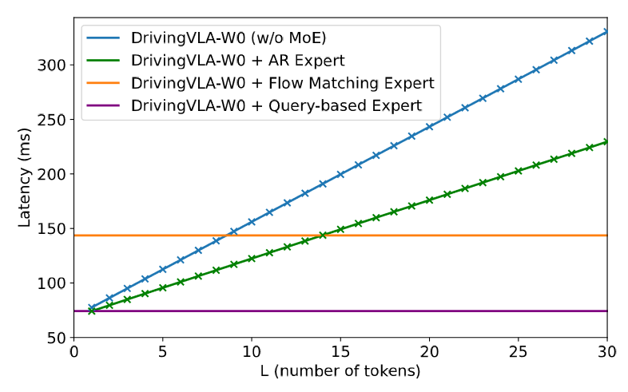
図6：レイテンシ分析。AR エキスパートと VLA ベースラインのレイテンシは生成トークン数 L に対して線形に増加する一方、フローマッチングおよびクエリベースのエキスパートは一定の推論時間を維持する。
図中ラベル：Latency (ms)＝レイテンシ（ms）、L (number of tokens)＝L（トークン数）、DrivingVLA-W0 (w/o MoE)＝DrivingVLA-W0（MoE なし）、+ AR Expert＝＋AR エキスパート、+ Flow Matching Expert＝＋フローマッチング・エキスパート、+ Query-based Expert＝＋クエリベースのエキスパート
B.2 生成忠実度と計画性能の正の相関
世界モデルの生成忠実度と下流の計画性能との関係を調べるため、この実験を行う。まず、異なるコンテキスト長で NuPlan 上で事前学習することにより、生成能力の異なる 2 つのモデルを用意する。5 つの先行する視覚・行動ペアを条件とする 6VA モデルと、1 つだけを条件とする 2VA モデルである。予想どおり、これらのチェックポイントを直接評価すると、6VA モデルのより長いコンテキストがより優れた FID スコアをもたらすことが示され（表8）、その生成忠実度の高さが確認される。生成品質の異なるこれらのモデルを用意したうえで、次に下流の計画における潜在力を検証する。NuPlan で事前学習した両チェックポイントを同一の設定（表5 の下 2 行と同じ）で NAVSIM 上でファインチューニングし、最終的な PDMS スコアを評価する。結果は強い正の相関を裏付けている。より優れた生成忠実度を持っていた 6VA チェックポイントは、ファインチューニング後もより高い計画性能を達成する。これは、高品質で現実的な将来画像を生成するモデルの能力が、高品質な軌跡を生成する能力と直接結び付いていることを示す説得力のある証拠である。
| 系列設計 | FID ↓ | PDMS ↑ |
|---|---|---|
| 2VA | 9.847 | 84.1 |
| 6VA | 4.610 | 85.6 |
| Upper Bound*（上限） | 3.007 | - |
表8：生成忠実度と計画性能の正の相関。*：MoVQGAN のエンコーダ・デコーダによって再構成された画像を示し、生成品質の上限となる。
B.3 アブレーション研究
世界モデルの時間ホライズン 世界モデルの入力に最適な時間ホライズンを特定するため、アブレーション研究を行う。共通の 6VA 事前学習済みチェックポイントを用い、表9 に示すように、時間的な入力範囲が異なる 3 つの構成をファインチューニングして評価する。i) VA：現在の視覚フレームのみを用い、過去の視覚コンテキストを提供しない。ii) VAVA (1s)：現在フレームと 1 秒前の 2 枚目のフレームを用いる。iii) VAVA (4s)：現在フレームと 4 秒前の 2 枚目のフレームを用いる。VAVA (1s) 構成が全体として最良の性能を達成し、最高の PDMS スコア 85.6 に達する。これは時間的入力における最適なトレードオフを示唆している。2 枚目の視覚フレームを欠く VA 設定は、環境の動的な情報を捉えるのに苦労する。逆に、VAVA (4s) 設定の 4 秒の間隔は、離れた 2 フレーム間に過度なシーンの変化をもたらし、それがモデルにとって将来予測タスクをより困難にしていると考えられる。
C 可視化
C.1 計画軌跡
本節では、モデルの挙動についてより深い洞察を与え、主要な知見を検証するために定性的な事例分析を提供する。分析は 2 つの部分からなる。第一に、図7 に示すように、困難なコーナーケースにおいて我々の DriveVLA-W0 をベースラインモデル（VLA ベースラインと TransFuser）と比較し、複雑なシナリオを走行するうえでの世界モデリングの利点を視覚的に示す。第二に、同じ VLA バックボーン上に構築した異なる行動エキスパートが生成する軌跡を比較する。続く図8、9、10 の可視化から、特にフレーム間の一貫性と攻撃的な運転操作の回避という点で、AR エキスパートはフローマッチングのアプローチよりも顕著に安定した軌跡を生成することが明らかになる。
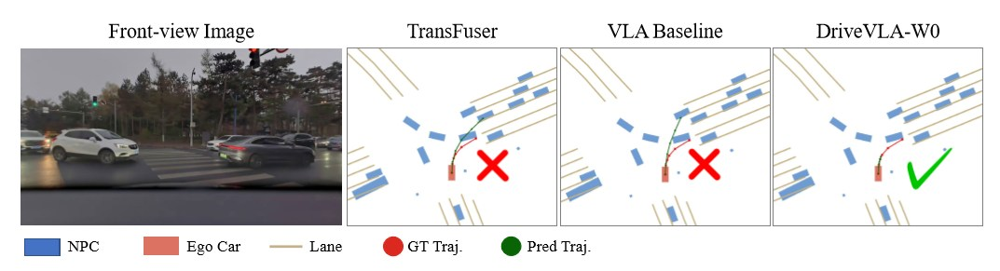
図7：世界モデリングは複雑なシナリオにおける軌跡計画を改善する。TransFuser と VLA ベースラインは、シーンのダイナミクスを予測する能力が弱いため、このような相互作用シナリオでしばしば失敗する。しかし、世界モデリングの支援により、VLA-W0 は強力な予測能力を持ち、この種のシナリオで衝突を回避する。
図中ラベル：Front-view Image＝前方視点画像、VLA Baseline＝VLA ベースライン、NPC＝他の交通参加者（NPC）、Ego Car＝自車、Lane＝車線、GT Traj.＝正解軌跡、Pred Traj.＝予測軌跡
| 事前学習の種類 | ファインチューニングの種類 | TI | NC ↑ | DAC ↑ | TTC ↑ | Comf. ↑ | EP ↑ | PDMS ↑ |
|---|---|---|---|---|---|---|---|---|
| 6VA | VA | / | 96.6 | 92.6 | 91.2 | 100.0 | 78.8 | 82.9 |
| 6VA | 2VA | 4s | 97.9 | 93.2 | 93.9 | 100.0 | 78.3 | 84.3 |
| 6VA | 2VA | 1s | 98.3 | 93.8 | 94.2 | 100.0 | 80.0 | 85.6 |
表9：世界モデル入力の時間間隔に関するアブレーション。結果は明確な性能のトレードオフを示しており、1 秒の間隔が最適である。現在フレームのみ（VA）を用いると時間的コンテキストが不足し、4 秒の間隔では過度なシーンの変化が生じる。
（訳注：TI は時間間隔（temporal interval）、Comf. は快適性を表す。）
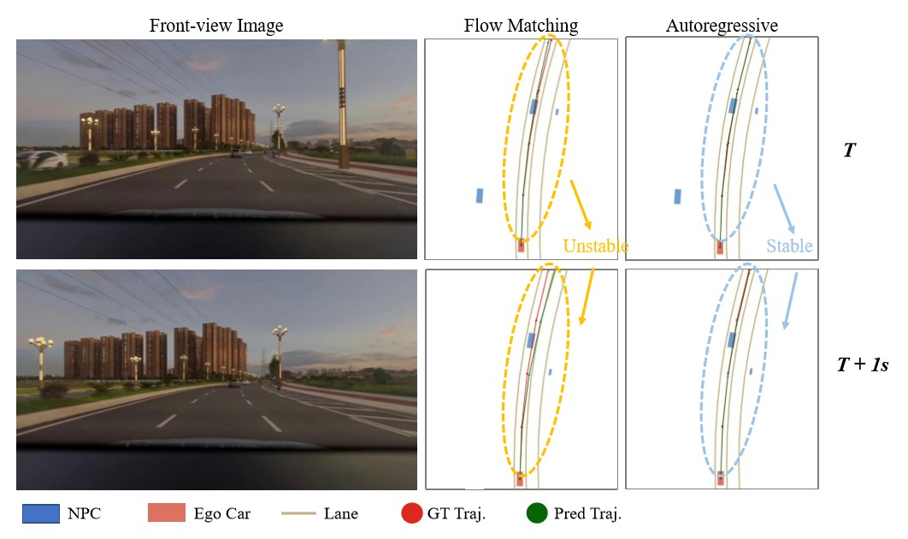
図8：フローマッチングと自己回帰の行動エキスパートの比較。フローマッチング行動エキスパートが生成する軌跡は比較的不安定で、隣接フレーム間で跳びが生じる。一方、AR 行動エキスパートははるかに安定した軌跡を生成する。
図中ラベル：Front-view Image＝前方視点画像、Flow Matching＝フローマッチング、Autoregressive＝自己回帰、Unstable＝不安定、Stable＝安定、T + 1s＝T＋1 秒、NPC＝他の交通参加者、Ego Car＝自車、Lane＝車線、GT Traj.＝正解軌跡、Pred Traj.＝予測軌跡
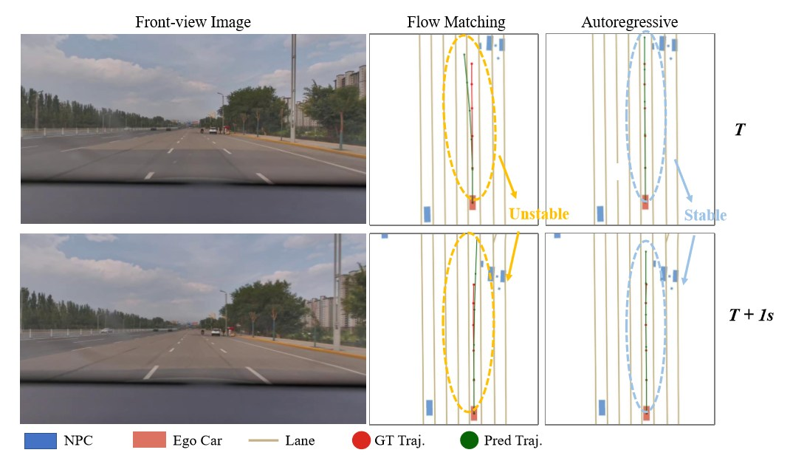
図9：フローマッチングと自己回帰の行動エキスパートの比較。フローマッチング行動エキスパートが生成する軌跡は比較的不安定で、隣接フレーム間で跳びが生じる。一方、AR 行動エキスパートははるかに安定した軌跡を生成する。
図中ラベル：図8 と同じ
C.2 失敗事例
モデルの性能をバランスよく捉え、今後の改善の方向性を見出すため、評価中に遭遇した代表的な失敗事例を分析する。これらの失敗を、指示の曖昧さと動的予測の誤りという 2 つの主要な種類に分類する。図11 に示すように、粗い粒度のナビゲーション指令は、複雑な道路トポロジー（例：Y 字路）において判断の迷いを招きうる。加えて、図12 は、相互作用の多いシナリオにおいて細かな動的物体（例：対向車）を予測することの難しさを浮き彫りにしている。
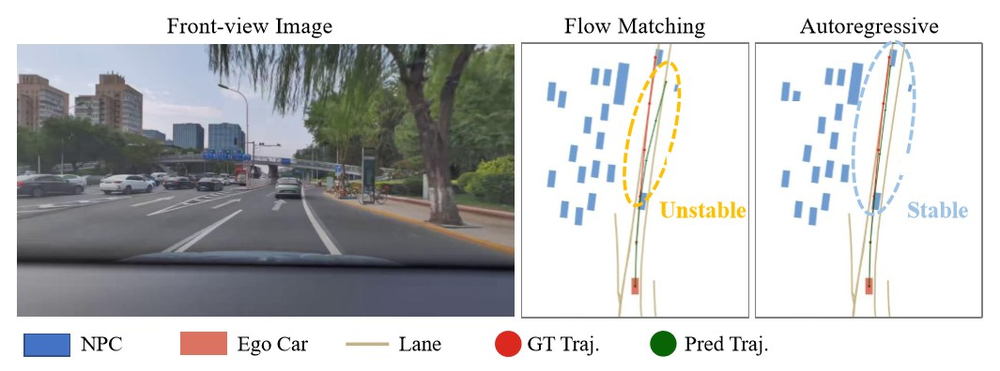
図10：フローマッチングと自己回帰の行動エキスパートの比較。フローマッチング行動エキスパートが生成する軌跡は比較的不安定であり、走行可能領域を逸脱することがある。AR 行動エキスパートははるかに安定した軌跡を生成する。
図中ラベル：Front-view Image＝前方視点画像、Flow Matching＝フローマッチング、Autoregressive＝自己回帰、Unstable＝不安定、Stable＝安定、NPC＝他の交通参加者、Ego Car＝自車、Lane＝車線、GT Traj.＝正解軌跡、Pred Traj.＝予測軌跡
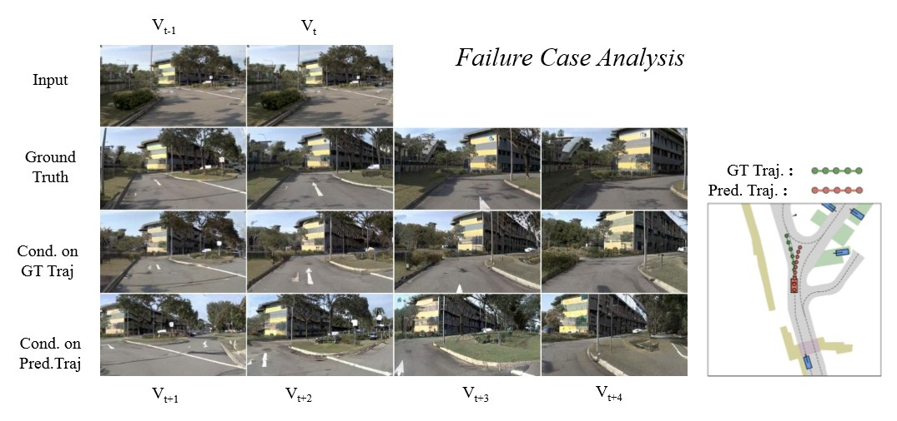
図11：失敗事例の分析：運転指令の曖昧さ。粗い粒度のナビゲーション指示の曖昧さに起因する失敗モードを示す。この Y 字型の交差点で、モデルは汎用的な「直進」指令を受け取る。道路が分岐するトポロジーのため、この指示は左右いずれの分岐にも明確に対応せず、曖昧である。その結果、モデルは有効な車線を選び切れず、ためらいながら分岐領域へ直進してしまう（予測された赤い軌跡が示すとおり）。これは現在の NAVSIM ベンチマークの限界を浮き彫りにしている。すなわち、離散的な指令セット（単純な左折／直進／右折に限られる）には、複雑な形状における曖昧さを解消するだけの粒度がない。注：モデルが利用できる視覚情報を忠実に表すため、表示されている画像はすべて生の RGB フレームではなく MoVQGAN トークンからの再構成である。
図中ラベル：Failure Case Analysis＝失敗事例の分析、Input＝入力、Ground Truth＝正解、Cond. on GT Traj＝正解軌跡で条件付け、Cond. on Pred.Traj＝予測軌跡で条件付け、GT Traj.＝正解軌跡、Pred. Traj.＝予測軌跡
C.3 将来画像の生成
我々の世界モデルは、高い視覚的忠実度と強い行動一貫性の両方を示す。図13 に示すように、多様で困難なシナリオにわたって現実的でもっともらしい画像を生成する。さらに重要なことに、これらの視覚予測はモデルの計画プロセスと緊密に結合している。
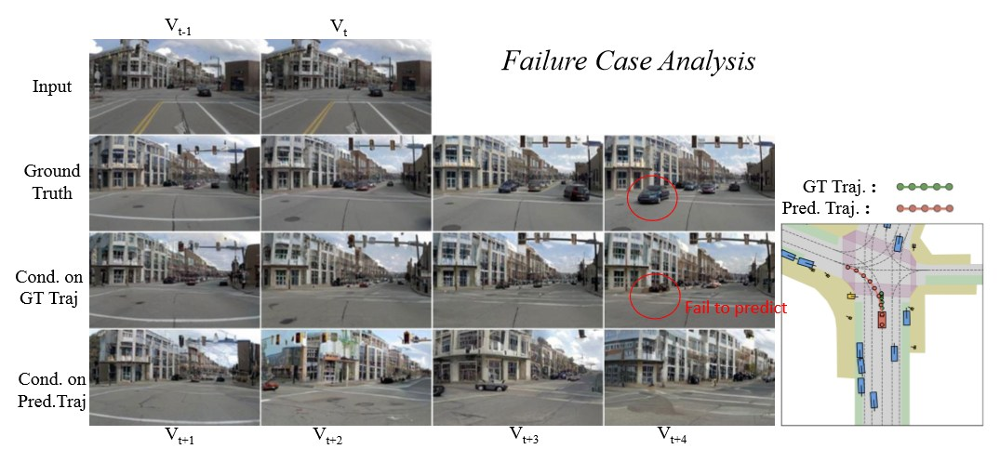
図12：失敗事例の分析：動的物体の予測。我々の世界モデルはほとんどの動的シーンにうまく汎化するが、複雑な交差点で複数の物体を予測することには課題がある。この事例では、世界モデルは将来フレームにおける対向車の出現を予期できていない（Cond. on GT Traj に反映されているとおり）。その結果、潜在的な競合に気付かないプランナが誤って左折を実行してしまう。これは、細かな動的物体のモデリングが今後の研究の有望な方向であることを浮き彫りにしている。注：モデルが利用できる視覚情報を忠実に表すため、表示されている画像はすべて生の RGB フレームではなく MoVQGAN トークンからの再構成である。
図中ラベル：Failure Case Analysis＝失敗事例の分析、Input＝入力、Ground Truth＝正解、Cond. on GT Traj＝正解軌跡で条件付け、Cond. on Pred.Traj＝予測軌跡で条件付け、Fail to predict＝予測失敗、GT Traj.＝正解軌跡、Pred. Traj.＝予測軌跡
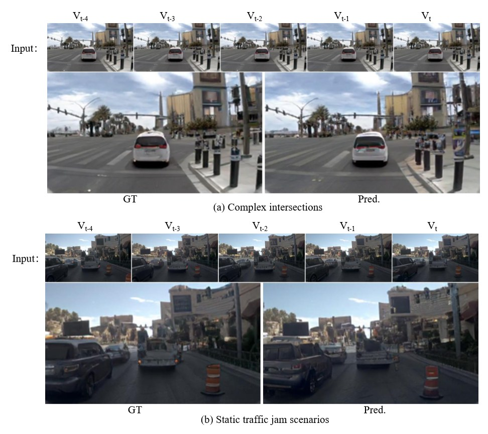
図13：将来画像の生成。我々の世界モデルは強い生成忠実度を示し、複雑な交差点や密な交通を含む多様で困難なシナリオにわたって、視覚的に現実的で文脈的にもっともらしい未来を生成する。
図中ラベル：Input＝入力、GT＝正解、Pred.＝予測、(a) Complex intersections＝(a) 複雑な交差点、(b) Static traffic jam scenarios＝(b) 静的な渋滞シナリオ
C.4 反実仮想推論
本節では、仮想的な行動に基づいて別の未来を合成する、モデルの反実仮想推論の能力を調べる。図14 に示すように、正解が直進であるにもかかわらず、モデルを「右折」行動で条件付けると、道路外に出る現実的な画像が生成される。これは、モデルが単に訓練軌跡を記憶しているのではなく、シーンの根底にある幾何構造を捉えていることを裏付ける。
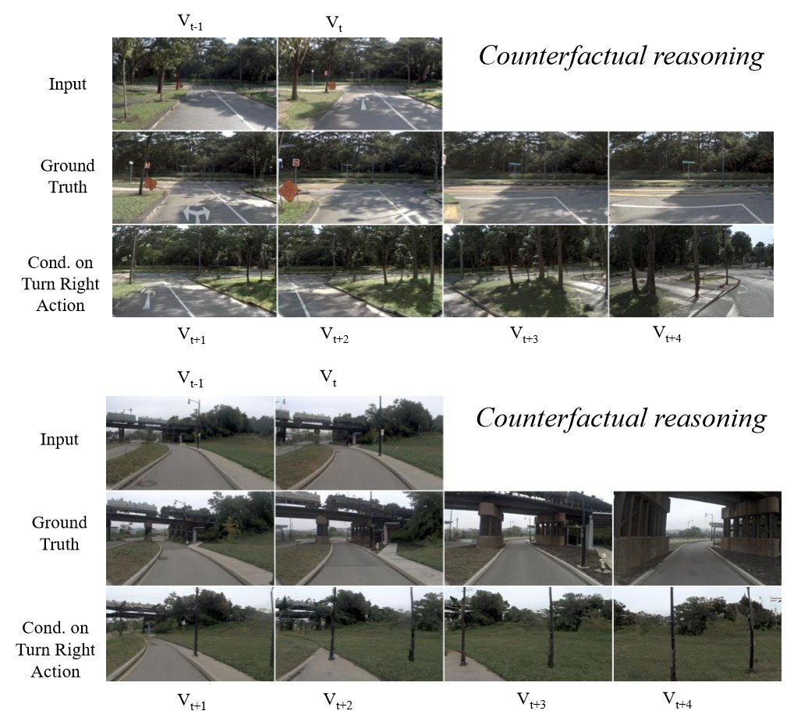
図14：反実仮想推論。道路脇で反実仮想的な「右折」行動を条件として与えると、我々の世界モデルは、車両が正解軌跡から外れて道路外を走行する現実的な動画系列を生成する。これにより、モデルが単に訓練データを記憶しているのではなく、シーンの根底にある幾何構造を学習していることが検証される。
図中ラベル：Counterfactual reasoning＝反実仮想推論、Input＝入力、Ground Truth＝正解、Cond. on Turn Right Action＝右折行動で条件付け
D 追加の実装の詳細
TransFuser 設定の一貫性のため、LiDAR ブランチの実センサ特徴量を BEV 潜在クエリで置き換えた Latent TransFuser を採用する。カメラブランチが主要な意味的特徴量と外観特徴量を供給し、潜在 BEV ブランチが学習可能なグローバルクエリアンカーを提供する。両者はクロスモーダルなクロス注意を介して整合され、相補的にはたらく。このようにして、Latent TransFuser は BEV ビューの大域的な幾何学的事前知識を保持し、視覚のみの構成のもとで安定した融合と計画性能を達成する。容量のトレードオフを明らかにするため、2 つの画像バックボーンを具体化する。軽量な ResNet-34 変種（TransFuser-50MB）と、大規模な DINOv3 ViT-7B 変種（TransFuser-7B）である。具体的には、入力は単一の前方視点 RGB 画像 \(\mathbf{I}\) と、サイズ \(H \times W\) の潜在 BEV クエリテンソル \(\mathbf{Q}_{\text{bev}}\) である。画像エンコーダ（ResNet-34 または DINOv3）と BEV 潜在エンコーダを経て \(\mathbf{F}_{\text{img}}\) と \(\mathbf{F}_{\text{bev}}\) を得て、これらをマルチスケールのクロス注意モジュールによって整合・融合し、融合表現 \(\mathbf{F}_{\text{fuse}}\) を生成する。計画ヘッドは \(\mathbf{F}_{\text{fuse}}\) に基づいて \(K\) 個の将来ウェイポイント \(\{\hat{\mathbf{p}}_{t+1}, \ldots, \hat{\mathbf{p}}_{t+K}\}\) を予測する。
（訳注：本文 4.2 節ではこのモデルを TransFuser-50M と表記しているが、ここでは TransFuser-50MB となっている。原文のまま掲載する。）
E 追加の関連研究
深層学習におけるスケーリング則。Kaplan et al. (2020) は、事前学習損失がモデルサイズ、データセットサイズ、計算コストに対してべき乗則でスケールすることを初めて体系的に示した。続いて Chinchilla（Hoffmann et al., 2022）は、多くの言語モデル（LM）が訓練不足であることを示し、モデルサイズとトークン数を比例してスケールさせる計算最適な処方を導いた。コンピュータビジョンでは、Zhai et al. (2022) が安定した訓練レシピとともに ViT のスケーリング則を描き出し、ViT-22B（Dehghani et al., 2023）は ViT を 220 億パラメータまでスケールさせ、予測可能なマルチタスクの改善を検証した。Lin et al. (2025) はロボティクスにおける模倣学習のデータスケーリングについて大規模な研究を行い、環境と物体の多様性を増やすことでほぼべき乗則に従う向上が得られ、ゼロショット汎化も改善することを見出した。自動運転では、STR（Sun et al., 2023）が大規模な軌跡モデルが予測と計画の両方で着実にスケールすることを示し、Baniodeh et al. (2025) は大規模な運転データセットを用いた運動予測と計画の同時実行において、べき乗則に従う改善を報告した。エンドツーエンド運転については、Naumann et al. (2025) が訓練データの規模が増えるにつれて、オープンループとクローズドループの両指標でおおよそ対数線形の向上を観察している。Zheng et al. (2024b) も大規模な模倣学習研究において、データのスケーリングによるべき乗則に従う改善を観察している。しかし、Zheng et al. (2024b) は疎な行動教師信号という従来のパラダイムの中でのみスケーリングの挙動を分析している。これに対し我々の研究は、世界モデリングが提供する自己教師信号によってこれらのスケーリング則がどのように作り変えられるかについての初の研究を提供する。
F LLM の使用
本稿の文章の推敲に大規模言語モデル（LLM）を用いている。